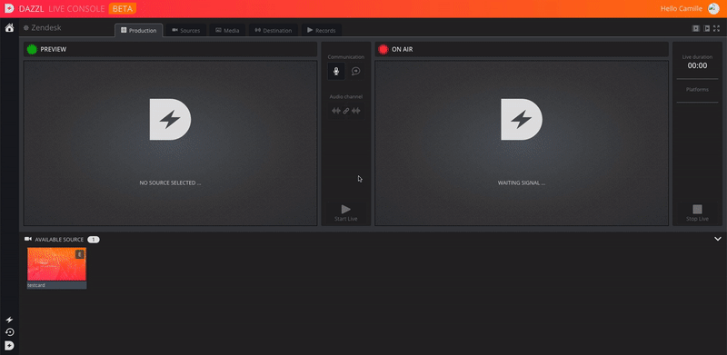

At the end of your Live, you can find your rushes and the final rendering of the Live in the "Records" tab of the Dazzl platform.
Depending on your license, you will be able to find them up to 2 months in your account, stored in the cloud.
You can preview them, as well as download them. It may take a few minutes after a Live event for them to be visible.
